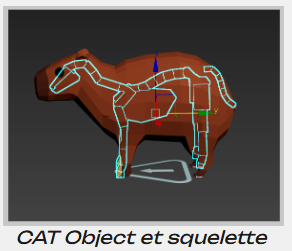

Contexte du Projet
Ce projet a été réalisé en 2ème année (Semestre 3) de BUT Informatique, parcours Informatique Graphique, à l’IUT de Clermont Auvergne – site du Puy-en-Velay.
L’objectif de ce projet universitaire était de développer un jeu vidéo 3D en vue isométrique en respectant l’un des thèmes suivants : écologie ou inclusion/handicap. Nous avons choisi d’aborder la thématique du handicap à travers un jeu d’aventure sur Unity (langage : C#).


Problématique et Objectifs
Le joueur incarne un capybara qui cherche à se repentir de ses mauvaises actions passées, notamment le fait de s’être moqué de son petit frère handicapé.
Pour cela, il traverse un monde dans lequel il rencontre d’autres capybaras atteints de handicaps. En apprenant à les connaître, il absorbe leurs handicaps et doit continuer l’aventure avec ces nouvelles contraintes.
Gameplay
Les handicaps sont appliqués au joueur de manière aléatoire pendant un temps déterminé. Ils affectent les déplacements, les actions, ou encore la gestion des munitions.
Le joueur dispose de 3 munitions (des oranges), d’une attaque au corps-à-corps, et de 3 vies. Il doit vaincre ses ennemis, les pécaris.
Mes Missions
- Développement des mécaniques liées aux handicaps
- Création des dialogues et personnalités des PNJ
- Animation des personnages (3ds Max, Blender) 
- Développement des zones d’interaction pour les dialogues et leur UI
.gif)
Compétences développées
- Techniques : Unity, C#, animation 3D, UI design
- Humaines : travail en équipe, communication, créativité, sensibilité aux enjeux d’inclusion
Retour d’expérience
Le principal défi était d’intégrer des mécaniques de handicap de manière cohérente, respectueuse et engageante pour le joueur. Nous avons dû faire plusieurs itérations pour équilibrer le gameplay et éviter de caricaturer les situations.
Ce projet m’a permis de prendre conscience de l’importance de l’inclusivité dans le game design, et de développer des compétences en design narratif, et en techniques de programmation.